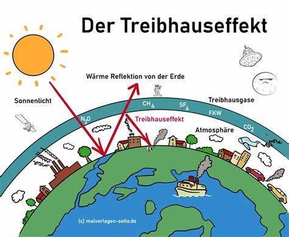
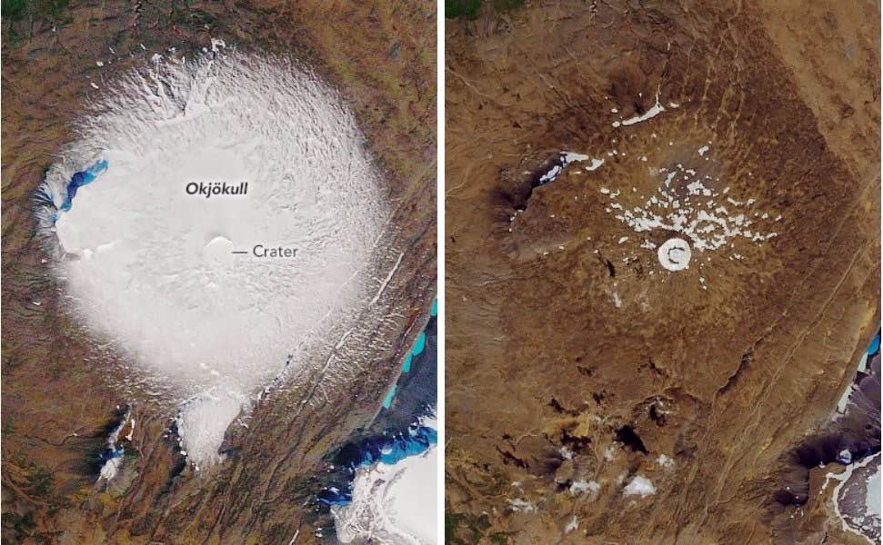
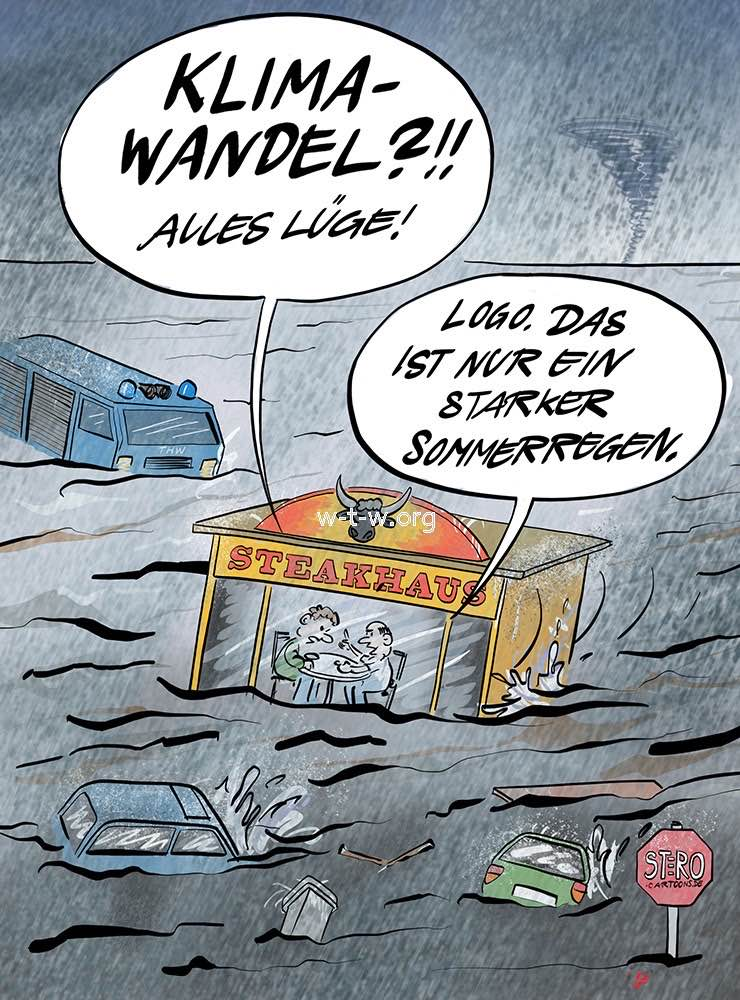

Treibhauseffekt
1. Definition
Der Treibhauseffekt
Der Treibhauseffekt ist ein natürlicher Prozess, bei dem bestimmte Gase in der Erdatmosphäre (z. B. Kohlendioxid, Methan und Wasserdampf) Wärme von der Erdoberfläche einfangen und wieder abstrahlen. Dies führt dazu, dass die Erde warm genug bleibt, um Leben zu ermöglichen.
Der durch menschliche Aktivitäten wie die Verbrennung fossiler Brennstoffe verstärkte Treibhauseffekt erhöht die Konzentration dieser Gase und führt zur globalen Erwärmung.

2. Ursachen des Klimawandels
2.1 Natürlicher Treibhauseffekt
Der natürliche Treibhauseffekt wird durch natürliche Treibhausgase verursacht, die aus natürlichen Vorkommen stammen und in einem Gleichgewicht stehen. Zu den natürlichen Treibhausgasen gehören Methan, Ozon, Wasserdampf, Lachgas und das bekannteste, Kohlendioxid.
Der Treibhauseffekt funktioniert so: Sonnenstrahlen treffen auf die Erdoberfläche und werden zurück in die Atmosphäre reflektiert. Die Treibhausgase halten einen Teil der Strahlen zurück und werfen sie erneut auf die Erdoberfläche, was zu einer zusätzlichen Erwärmung führt. Ohne den natürlichen Treibhauseffekt läge die globale Durchschnittstemperatur bei etwa -18 °C. Mit dem natürlichen Treibhauseffekt beträgt sie angenehme 15 °C.
Quelle: Energiemarie
2.2 Anthropogener Treibhauseffekt
Der anthropogene Treibhauseffekt entsteht durch den Menschen, der immer mehr Treibhausgase in die Atmosphäre abgibt. Dies geschieht hauptsächlich durch das Verbrennen kohlenstoffhaltiger Materialien.
Der anthropogene Treibhauseffekt verstärkt die Wirkung des natürlichen Treibhauseffekts und führt zu einer höheren globalen Durchschnittstemperatur. Der Mensch erzeugt durch Verkehr und Industrie den Großteil der Treibhausgase. Der anthropogene Treibhauseffekt hat bereits die globale Durchschnittstemperatur um etwa +1 °C erhöht.
Quellen: Studyflix, Energiemarie
3. Entstehung und Wirkung von Treibhausgasen
3.1 Entstehung von Treibhausgasen
Treibhausgase können auf verschiedene Arten und Weisen auftreten und entstehen:
Kohlendioxid (CO₂)
- Atmung von Lebewesen (Menschen, Tiere, Pflanzen)
- Verbrennung fossiler Brennstoffe: Kohle, Öl und Gas werden verbrannt
- Abholzung: Wälder werden abgeholzt oder verbrannt
- Zementproduktion: Kalkstein wird erhitzt
Methan (CH₄)
- Landwirtschaft: Rinder und Reisfelder produzieren Mengen an Methan
- Deponien: Organische Abfälle zersetzen sich anaerob
- Erdgasförderung: Methan entweicht bei Förderung und Transport
Distickstoffmonoxid (N₂O)
- Düngemittel: Stickstoffhaltige Düngemittel werden umgewandelt
- Industrie: Einige chemische Produktionsprozesse
- Verbrennung von Biomasse und fossilen Brennstoffen
Fluorierte Gase
- Kältemittel: In Klimaanlagen und Kühlschränken
- Industrie: Elektronikproduktion und Schaumherstellung
Wasserdampf (H₂O)
- Verdunstung: Wasser verdunstet aus Ozeanen, Seen und Flüssen
- Transpiration: Durch Pflanzen, die ihr Wasser abgeben
Zusammenfassend: Die Gase werden von der Erdoberfläche abgegeben und gelangen somit in die Erdatmosphäre. Der natürliche Treibhauseffekt entsteht zu etwa 2/3 durch Wasserdampf. Diese Gase tragen zur Erwärmung der Erdatmosphäre bei, indem sie Wärme einfangen.
3.2 Wirkung der Treibhausgase
Die Sonnenstrahlen kommen als Form von Licht und Wärme zur Erde. Ein gewisser Teil davon wird absorbiert und erwärmt den Planeten. Die Erdoberfläche gibt einen Teil dieser Wärme als Infrarotstrahlung zurück in die Atmosphäre.
Die Treibhausgase absorbieren einen Teil der Infrarotstrahlung. Dabei wird die Wärme dieser Gase in der Atmosphäre gespeichert. Die aufgenommene Wärme wird dann in alle Richtungen gestrahlt (auch zurück zur Erdoberfläche). Dadurch kann die Wärme nicht vollständig ins Weltall entweichen, wodurch die Erde wärmer wird.
4. Auswirkungen und Folgen des Treibhauseffekts
Auswirkungen auf Ökosysteme und Lebewesen
Der Treibhauseffekt führt zur Erwärmung der Erde, was erhebliche Folgen für Ökosysteme und Lebewesen (Menschen, Tiere, Pflanzen) hat. Die schnelle Erwärmung erschwert die Anpassung von Pflanzen und Tieren an die neuen Bedingungen, was zum Verlust vieler Arten und zur Verringerung der Biodiversität führt.
Seit der Industrialisierung wurden immer mehr künstliche Treibhausgase in die Atmosphäre abgegeben. Die Polarkappen schmelzen, und Gletscher wie der Okjökull in Island verschwinden. Das schmelzende Eis trägt zum Anstieg des Meeresspiegels bei.
Die Erwärmung der Ozeane führt dazu, dass weitere Arten aussterben, da sie sich nicht schnell genug an die veränderten Lebensbedingungen anpassen können. Das Wetter verändert sich ebenfalls und zeigt sich in immer extremeren Formen, wie starken Niederschlägen, Schneefällen und langen Hitzewellen. Diese Veränderungen schädigen die Ökosysteme der Erde.

Quellen: Landsiedel Seminare - Treibhausgas, Wikipedia - Treibhauseffekt, Energiemarie - Treibhauseffekt
Zusammenfassung der Folgen
- Gletscher schmelzen
- „Ewiges Eis“, das sich am Nordpol befindet, taut auf
- Anstieg des Meeresspiegels
- Erwärmung der Meere und Anstieg der Verdunstung des Wassers
- Häufigere Überschwemmungen könnten entstehen
- Häufigeres Auftreten von Hitze- und Dürreperioden
Daraus folgt: Weitere Unmengen an Treibhausgasen werden freigesetzt, wodurch sich die Folgen weiter verschlimmern. Es entsteht ein sogenannter Teufelskreis. Der ansteigende Meeresspiegel und die Wetterextremen gefährden das Leben aller Lebewesen.
Quelle: NASA - Climate Change
Analyse der Karikatur
Diese Karikatur zeigt eine Überschwemmung, bei der ein Haus und viele Fahrzeuge zu einem großen Teil im Wasser versinken. In einem Steakhaus sitzen zwei Personen, die den Klimawandel nicht wahrhaben wollen, was man an ihren Aussagen „Klimawandel?!! Alles Lüge!“ und „Logo, das ist nur ein starker Sommerregen.“ erkennen kann.
Hierbei könnte die Aussage der zweiten Person auch ironisch gemeint sein. Der Karikaturist will mit dieser übertriebenen Abbildung – da es sich hierbei nicht nur um einen starken Sommerregen handelt – darauf aufmerksam machen, dass viele Leute den Klimawandel als unbedeutend abtun.
Der Karikaturist weist damit auf bestehende Probleme wie Überflutungen in versiegelten Großstädten hin und auf das Ausmaß der Zerstörung, welches es durch Maßnahmen zur Vermeidung zu verhindern gilt. Das kleine Stoppschild in der Ecke unten rechts unterstreicht diese Aussage, bei der er zum Stoppen des Klimawandels aufruft.

5. Maßnahmen zur Vermeidung
Klimaanpassungsstrategie 2024 in Deutschland
Die Klimaanpassungsstrategie 2024 legt den Fokus auf dringende Aufgaben und Probleme, die durch den Klimawandel entstehen. Es wurden 33 Ziele mit 45 Unterzielen definiert, die bis 2030 bzw. 2050 erreicht werden sollen. Die Strategie wird alle vier Jahre angepasst und optimiert.
- Entgegenwirken der Hitze durch mehr grüne Grundflächen
- Entgegenwirken von Hochwasser durch Anpassung von Flussläufen
- Ausbau eines Warnsystems für die Bevölkerung vor Umweltkatastrophen
5.1 Erneuerbare Energien
Der Umbau der Energieversorgung von fossilen zu erneuerbaren Energiequellen verhindert oder verringert den Ausstoß von CO2 und anderen Treibhausgasen. Diese Maßnahme bekämpft den Treibhauseffekt an seinem Ursprung – bei der Entstehung der Treibhausgase.
Reduktion weiterer Treibhausgase: Durch die Anpassung von Herstellungsverfahren und die effizientere Nutzung fossiler Energieträger können überflüssige Emissionen verhindert werden. Zudem wird Energie durch modernisierte Prozesse sparsamer genutzt.
5.2 Pariser Klimaabkommen
Das am 12. Dezember 2015 auf der Weltklimakonferenz beschlossene Pariser Klimaabkommen soll die Weltwirtschaft klimafreundlich umgestalten und den Klimawandel weltweit eindämmen.
Die Hauptziele des Abkommens sind:
- Die Beschränkung des Anstiegs der weltweiten Durchschnittstemperatur (der Anstieg soll 1,5 Grad Celsius nicht überschreiten)
- Die Senkung der Treibhausemissionen und deren Anpassung an den Klimawandel
- Die Lenkung von Finanzmitteln im Einklang mit den Klimaschutzzielen
Durch die Verpflichtung vieler Staaten weltweit stellt das Abkommen einen wichtigen Schritt im Kampf gegen den Klimawandel dar.
Quelle: Pariser Klimaabkommen - BMZ